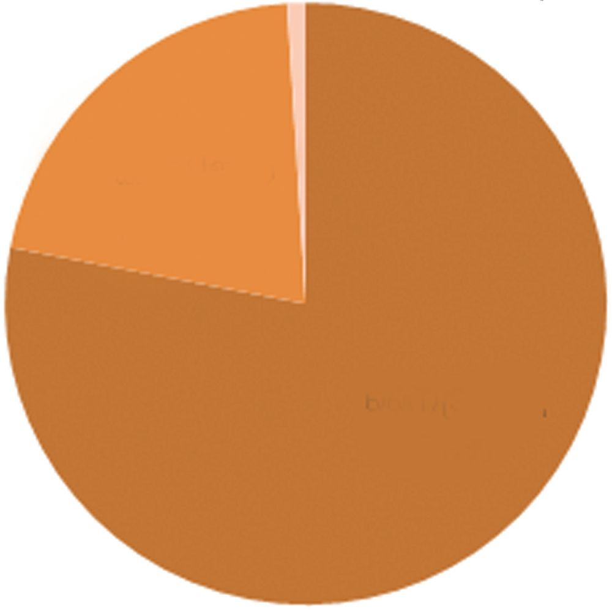
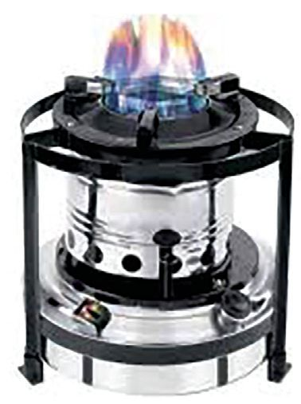
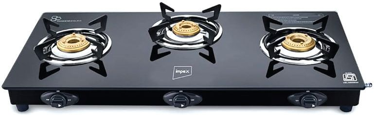
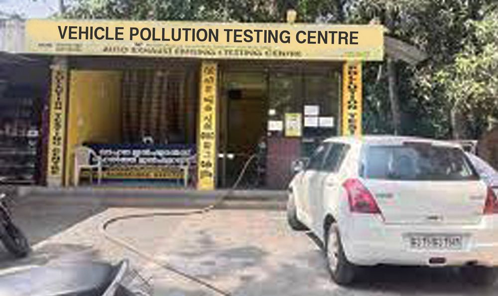

How beautiful our Kerala is! We have countless scenic beauty around us. At
the same time we can also see some painful sights caused by unscientific
human interventions. Such pictures are given below. Observe them.
161
Page 58
Basic Science
What sights do you see?
u
u
Organisms that suffocate due to fumes released while burning solid waste
including plastic.
Stagnant water bodies due to the dumping of solid waste.
Have you seen such sights? List such situations you have observed and the
problems caused by them.
Situations
Plastic being burnt
Problems
Air gets polluted due to smoke
You might have recognised some of the problems caused by pollution. Let’s
explore more about pollution.
Burning of Garbage and Air Pollution
Which are the substances produced when solid waste, including plastic, are
burnt? Won’t there be unburnt remains while burning plastic and other
materials? What will happen to these unburnt remains when it rains? What
are the consequences of such situations? Analyse the illustration given below
and write your findings in the Science Diary.
Burning wastes including plastic
Smoke
Unburnt remains
Air
Water
Soil
Brea
For
drinking
thin
t
g
ta
i
b
a
H
Man
Animals
Plants
162
Page 59
Class - VII
Now you are convinced that the smoke and unburnt remains generated by
burning wastes, including plastic, have an adverse impact on air, soil, water
and living organisms. What chemical substances are present in the smoke
produced when plastic is burnt? How do they affect our health? Analyse the
table given below and find it out.
Chemical substances produced
when wastes including
plastic are burnt
Health issues affecting humans
Carbon monoxide
Even when a small amount reaches the
body problems like headache, fatigue,
blurred vision and memory loss occurs.
Inhalation of large quantity of carbon
monoxide leads to death.
Sulphur dioxide
Causes cardiovascular and respiratory
diseases.
Nitrogen dioxide
Causes respiratory diseases.
Particulate matter
Inhalation causes itching in throat and
eyes, allergy, asthma and lung cancer.
Dioxins
Increase the risk of cancer, cause thyroid
related problems and respiratory diseases.
Which are the chemical substances released while burning waste materials
including plastic? What are the health issues caused as a result of this? Write
them in the Science Diary.
Does air pollution cause changes in the components of air?
Components of Air
Which are the elements found naturally in air? Observe the given pie diagram
and tabulate their quantities.
163
Page 60

Figure fig_ch04_p060_01 (Page 60)
Basic Science
Others
0.96%
Carbon dioxide
0.04%
Oxygen
21%
Nitrogen
78%
u
What are the components present in atmospheric air?
u
Which is the most abundant component?
u
What is the quantity of oxygen in air?
Analyse the pie diagram, complete the table and record the quantity of each
component.
Components of Air
Quantity
Nitrogen
78%
When the atmospheric air is mixed with chemical substances, the quantity of
natural constituents in the air changes.
Air Pollution
Air pollution is caused by the mixing of smoke, toxic gases and other
chemical substances in the atmospheric air. Wildfires and natural
phenomena like volcanic eruptions and earthquakes also contribute to
air pollution. Indiscriminate actions of human beings are the main cause
of air pollution.
We have discussed the pollution caused by the burning of materials. What are
the other ways by which air pollution is caused?
164
Page 61
Figure fig_ch04_p061_01 (Page 61)

Figure fig_ch04_p061_02 (Page 61)

Figure fig_ch04_p061_03 (Page 61)
Class - VII
Cooking Fuels and Air Pollution
Which types of stoves are used for cooking?
Observe the pictures of stoves given below. Identify the fuel used in each?
Firewood stove
Kerosene stove
Stove
Gas stove
Fuel Used
Firewood stove
Kerosene stove
Gas stove
When fuels like wood, kerosene and cooking gas are burnt, various chemical
substances are released.
The chemical substances released are mainly carbon dioxide, carbon monoxide,
nitrogen dioxide, particulate matter etc. You have already understood the
major health problems caused by excessive inhalation of these gases.
What measures should be taken to control air pollution in the kitchen due to
the burning of cooking fuels? Discuss with friends and write in the Science
Diary.
u
Construction of chimneys
u
Proper ventilation
u
As in the kitchen, don’t we use different types of fuels in our vehicles? Which
are the fuels commonly used in vehicles? Write them in the Science Diary.
165
Page 62
Figure fig_ch04_p062_01 (Page 62)
Basic Science
Automobiles and Air Pollution
When automobile engines are operated using fuels like petrol and diesel,
sulphur dioxide, nitrogen dioxide, carbon monoxide and particulate matters
are released. Mixing of these with atmospheric air also causes air pollution.
Vehicle Inflation in Kerala
Number of vehicles
The change in the number of automobiles in Kerala since 2013 is shown in the
bar diagram below.
80
lakhs
94
lakhs
1 crore
1 lakh
1 crore
33 lakhs
1 crore
48 lakhs
1 crore
63 lakhs
Year
u
What was the approximate number of vehicles in 2013?
u
What was the number of vehicles in 2023?
u
What is the change in the number of vehicles from 2013 to 2023?
Discuss with your friends and write in the Science Diary.
How does the increase in petrol/diesel vehicles affect the air? Haven't you
seen instances where only one person is travelling in one vehicle which can
accommodate more passengers? Shouldn't this be avoided as much as
possible? Use of public vehicles must be encouraged over private vehicles.
How does the use of vehicles like bicycles benefit the environment? Present
your findings in the class.
166
Page 63

Figure fig_ch04_p063_01 (Page 63)
Class - VII
Smoke Testing
Look at the picture given below. Haven't you seen smoke testing of vehicles
being done at Pollution Testing Centres?
Smoke testing is carried out to find out whether the smoke of vehicles contains
more than the permissible amount of harmful chemical substances. By smoke
testing, it can be detected whether vehicle emissions contain more harmful
chemical substances due to engine failure, age of vehicles and impurities in
fuel.
How does smoke testing help to reduce air pollution? Discuss in your class.
Visit a Vehicle Pollution Testing Centre and find out the activities going on
there.
Electric Vehicles
Have you seen vehicles having green name plates with EV printed on them?
They do not emit carbon or smoke like petrol/diesel vehicles. Electric vehicles
are a solution for air pollution caused by vehicles.
What are your comments on the use of vehicles regarding air pollution control?
Write them in your Science Diary and present them in the class.
So far, we have discussed air pollution caused by burning fuels and other
substances. Apart from this, what are the other ways by which air gets
polluted?
Analyse the Pie diagram given below and find out how air pollution occurs in
our country.
7%
Dust particles,
construction activities (45%)
8%
Burning waste (17%)
9%
45%
Automobiles (14%)
14%
Diesel generator (9%)
Industries (8%)
17%
Home cooking (7%)
How does air pollution occur? Based on the Pie diagram, prepare a note on
your findings and present it in the class.
You have understood the various ways in which air gets polluted and its
consequences.
Conduct a seminar in your class on air pollution, its causes and remedies.
Similarly, is water subjected to any kind of pollution?
Water on the Earth
You know that two third of the Earth is water. Observe the pictures given
below.
What are the different forms of water found on the Earth?
u
Ice caps, glaciers etc.
u
Water vapour
u
For further reading
Water, Water, Everywhere...
Ocean water constitutes 97% of the Earth's water. Only 3% is freshwater
(water without salt). About 69% of freshwater is found as ice caps and
glaciers. We cannot use this also. 30% is groundwater. All water bodies
including rivers, lakes and ponds contain only 0.3% of fresh water.
Salt water
97%
Pure water
3%
Total water on the Earth
Under
ground
water
30.1%
Ice caps,
Glaciers
68.7%
Pure water
River - Then and Now
I used to take bath
in this river during
my childhood days.
Look at the condition
of this river now.
169
Surface water
0.3%
Others
0.9%
Page 66
Figure fig_ch04_p066_01 (Page 66)
Basic Science
How do water bodies get polluted?
u
Disposal of plastic wastes
u
Spillage of chemical substances
u
Given below is the picture of a water body polluted by algae.
What is the reason for this condition of the water body? Read the note given
below and record it in the Science Diary.
Eutrophication
Excess growth of water plants like algae in water bodies is caused by a
phenomenon known as eutrophication. This happens in water bodies
where fertilisers containing nitrogen and other similar substances flow in.
It is such flowing excess nutrients that cause excessive growth of aquatic
plants. These aquatic plants use oxygen dissolved in water excessively.
Due to this, other plants and animals in water die without getting oxygen
and the ecosystem that existed in the water body gets disturbed.
Now it is understood that water pollution is a reason for the destruction of
ecosystem.
By analysing the pictures given below and observing your surroundings, find
out the situations that cause water pollution and write them in the Science
Diary.
u
Excessive use of chemical pesticides
u
Discharge of waste water into drainages
u
Dumping of slaughterhouse waste in land and water bodies
u
Discharge of waste from industries into water bodies
u
You have listed the situations related to water pollution. Discuss its
consequences and write them in your Science Diary.
It is our duty to protect water sources from all types of pollution. What
measures can we adopt to make water sources free from pollution? Discuss.
Drinking water sources are the most important among water sources. Which
are the sources of drinking water in your school?
Which are the qualities drinking water should have?
In the following statements, put a tick ()mark against the qualities that
drinking water should possess.
171
Page 68
Basic Science
u
Clear water
u
Colourless and odourless
u
Free from germs
u
Absence of hazardous chemical substances
u
Presence of adequate mineral salts
u
Salty taste
u
Neither acidic nor basic
You have identified the qualities that drinking water should possess. Does the
water you use in your house and school have these qualities? You can test
certain qualities of drinking water even in your classroom.
Testing Drinking Water
Collect samples of drinking water and test the following characteristics:
u
Colour
u
Odour
u
Acidic/basic nature
u
Presence of insoluble impurities
What materials are required for doing the experiment?
u
Hand lens
u
Filter paper
u
Universal indicator
u
How can we observe the colour and odour of water?
What characteristics of water can be identified using filter paper and hand
lens?
Can’t you find out whether water is acidic or basic, using universal indicator?
172
Page 69
Class - VII
Check the samples of drinking water you have collected. Collect data and
tabulate. Analyse the data and record the results in your Science Diary. Present
them before the class.
Shouldn’t the drinking water be purified if it is contaminated with impurities?
Let's familiarise with certain methods of water purification.
Purification of Drinking Water
What methods do you know to purify drinking water if it is contaminated
with impurities? List them out.
u
Sifting
u
Some methods to purify drinking water are given below:
Analyse them, find out the merits and demerits and present them before the
class.
Boiling
Boiling for at least one minute will kill the microorganisms
in the water. But the dissolved components in the water
will remain.
Sifting
Undissolved impurities in water are separated by filters.
But microbial and dissolved components are not
removed.
Sedimentation
The undissolved impurities are allowed to settle down.
The water that appears on top can be separated and
used. Microbes and dissolved components cannot be
completely removed by this method.
Chlorination
Adding sufficient quantity of bleaching powder will kill
the microorganisms in water. But the components
dissolved in the water cannot be removed.
Distillation
It is the method of boiling water into steam and cooling
it to collect pure water. There will be no dissolved
components in the water collected in this way.
Enquire other ways to purify drinking water. Record them in Science Diary.
Which of the above methods are used in your home and school? Write them
in the Science Diary.
173
Page 70
Figure fig_ch04_p070_01 (Page 70)
Basic Science
Pollution in Soil Too
Observe the headlines and the picture of the news given below.
Dumping
garbage
here is
punishable
What are the things mentioned in this news? How do such habits of some
people in our society affect the environment? Write your findings in the
Science Diary and present them before the class.
Household Waste
List out the different kinds of waste formed in a household?
u
Fruit peel
u
Vegetable waste
u
Plastic covers
u
You know that if a fruit peel is left in the soil for a long time, it may get
dissolved into the soil as a result of the action of soil microbes. Biodegradable
wastes are such wastes that decompose and get dissolved in the soil due to the
action of microbes. Instead, if it is a piece of plastic, will it degrade into the soil
like the fruit peel? Microorganisms in soil cannot breakdown plastic waste,
glass pieces, metals, electronic waste, thermocol and the like. Such substances
are non-biodegradable wastes.
174
Page 71
Figure fig_ch04_p071_01 (Page 71)
Class - VII
Classify wastes into biodegradable and non-biodegradable.
Biodegradable
u
Non Biodegradable
Banana peel
u
u
u
u
u
Plastic covers
u
Out of these, which type of wastes cause soil pollution? Discuss.
Nonbiodegradable wastes such as plastic products, pesticides and chemical
substances pollute the soil. Metals like Mercury and Cadmium present in CF
lamps, computers and electronic products also cause soil pollution.
Separating Household Wastes
Certain household wastes are mentioned below:
Bulbs, food wastes, CF lamps, paper, paper cups, footwear, bags, clothes,
pesticide containers, paint containers, plastic bags, vegetable wastes,
cardboard packing materials, plastic cups, mobile phone battery, plastic
bottles, glass bottles, empty toothpaste tube, fish and meat waste.
Classify and tabulate them in such a way that they can be deposited in the
appropriate bins shown in the figure.
Bio
degradable
waste
Nonbiodegradable
waste
Hazardous
waste
Haven't you properly sorted out the garbage? Do you practice this method at
home and school? What is the advantage of sorting waste at its origin itself?
What should we do after sorting those garbage? Let’s discuss.
Scientific Methods of Waste Management
The most appropriate method is to dispose the waste at the source itself. This
is known as waste management at source. Its first step is to segregate the
waste at the source itself. Some of the waste you have sorted out can be used
to make organic manure. Which are they?
Organic waste can be broken down into simpler chemical compounds with
the help of microorganisms. They decompose to form nitrate, phosphate and
sulphate which are helpful for plant growth. Hence, they can be used as
fertilisers. Bio waste can become organic manure only if it is treated in proper
way. There are three main methods of biowaste management at household
levels.
u
Vermi composting
u
Air contact composting
u
Production of biogas
Vermicompost is a fertiliser produced using
earthworms. This is also a method of waste
management. Plastic containers, large pots and
cement tanks are used for vermicomposting.
Earthworm takes in organic matter and their
excreta turns into manure.
Earthworm compost
Manure produced by vermi composting is superior
to other manure.
Air Contact Composting
Observe the picture. Are you familiar with this
system?
A biocomposter bin consists of specially designed
containers for waste management. They are arranged
in tiers as shown in the figure. The process taking
place in it is air contact composting. Find out how it
works.
176
Biocomposter bin
Page 73
Figure fig_ch04_p073_01 (Page 73)
Class - VII
Biogas Production
A biogas plant is a system that converts waste into
fuel in the absence of oxygen. In this method, along
with waste management, cooking gas is also
obtained as a product. Visit a biogas plant and learn
about its working. Write it in the Science Diary.
We can manage biodegradable waste generated at
home and school using the above methods. Collect
more details about each method.
Biogas Plant
Any one of these methods can be adopted to manage
biodegradable waste in your home.
Paper and paper products can be recycled. But can all nonbiodegradable
waste be disposed in the same way? Plastic products that are very thin cannot
be recycled. What would be the reason for banning the production and
distribution of very thin plastic covers? What measures can be taken to reduce
nonbiodegradable waste?
Haven’t you heard of 3 R’s? What does it indicate?
u
Reduce
u
Reuse
u
Recycle
It is a strategy adopted worldwide to reduce the amount of nonbiodegradable
waste. It has to become a part of our life and culture.
R- Reduce
(minimised use)
R- Reuse (Reusable)
(Only those with standard grades)
R- Recycle
(Recyclable)
Plastic cups
Plastic bags
Metal products
Plastic, thermocol
plates
Plastic jars
Plastic products
Mineral water bottle Plastic utensils
u
u
u
u
177
Page 74
Figure fig_ch04_p074_01 (Page 74)
Basic Science
Haritha Karma Sena
In our state, Haritha Karma Sena
is playing a major role in
transporting nonbiodegradable
waste to the treatment centers.
Enquire more about the activities
of Haritha Karma Sena and write
them in the Science Diary. Local
Self Governments are implementing various activities to avoid environmental
pollution. Collect information about such activities, prepare a report and
present it before the class.
Pollution Problems in My Locality (Investigatory Project)
We have understood the various situations in which air, water and soil are
polluted and their consequences. Conduct a study to find whether such
conditions exist in your locality for air, water and soil.
Write your hypotheses regarding this topic in your Science Diary.
What observations are needed for conducting the study? What information
are to be collected?
Analyse the data and prepare a project report including your findings and
recommendations. Present it before the class and invited guests and discuss.
Waste Free Green School
Discuss in class, the steps you can take to make your school a waste free green
school.
Actions to be taken
Objectives
Garbage disposal of noon-meal
Paper waste disposal
Plastic waste disposal
Constructing Biodiversity Park
Carry out the activities you have planned with the help of everyone in the
school. Achieve the goal of a Zero Waste Green School through it.
It is the duty of every human being to protect water, soil and air from being
polluted.
Let’s Assess
1. Observe the diagrams given below. Find out how the air is gets polluted
in each situation and complete the table.
Situation
Ways of air pollution
Consequences
•
•
•
•
2. Prepare posters calling for the prevention of environmental pollution.
3. Identify the correct statements regarding plastic waste management from
those given below:
a) Thin plastic products should be burnt.
b) Plastic products should be recycled as much as possible.
c) Plastic products should be reused as much as possible.
d) Use of plastic products should be minimised.
179
Page 76
Basic Science
4. Which method of purification can be adopted to separate freshwater from
seawater?
a) Sifting
b) Chlorination
c) Distillation
d) Sedimentation
Extended Activities
1. Take moist soil in a pot. Bury a fruit peel and a plastic wrap in the potting
soil simulataneously. Observe them after two weeks. Prepare a note based
on your findings.
2. Prepare a speech on ‘Vehicles and Air Pollution.’
3. Prepare a short note based on an activity carried out at your home on a
project implemented by the Local Self Government for waste management.
Present it before the class.
4. Create and display a logo in connection with making your school a Zero
Waste Green School.